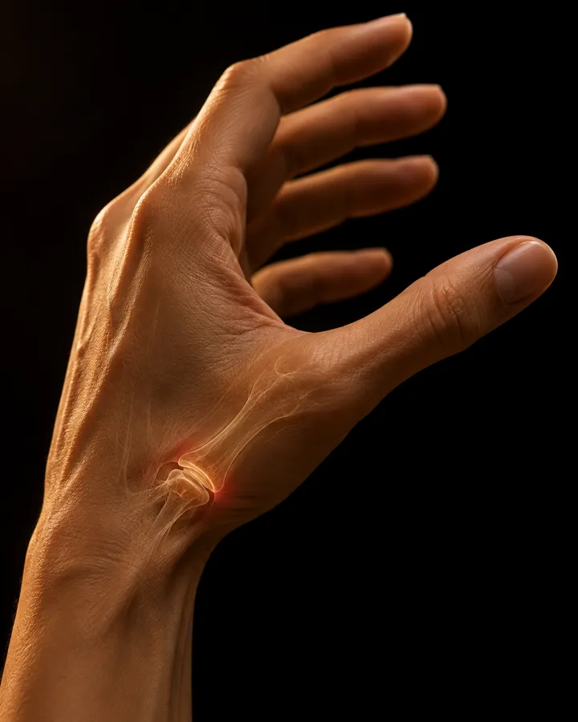
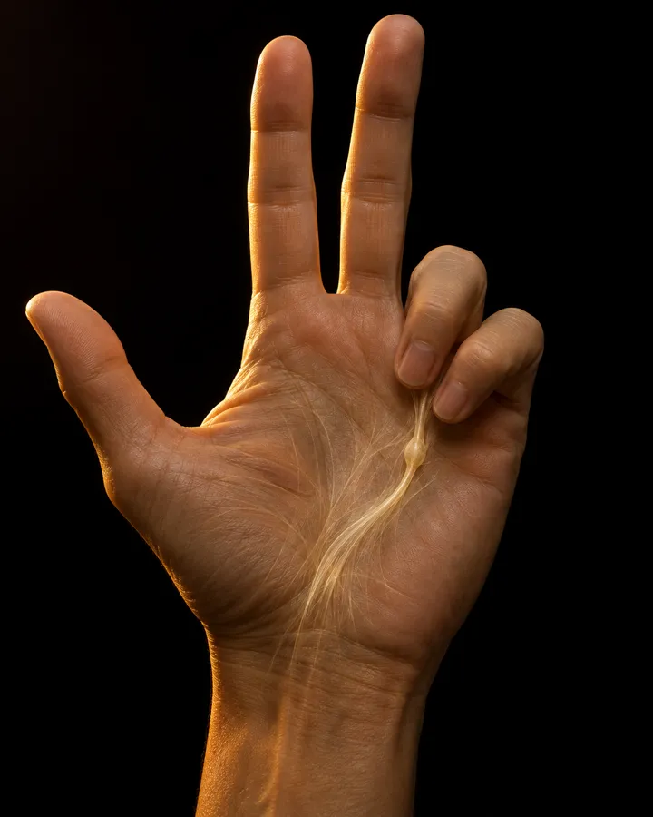
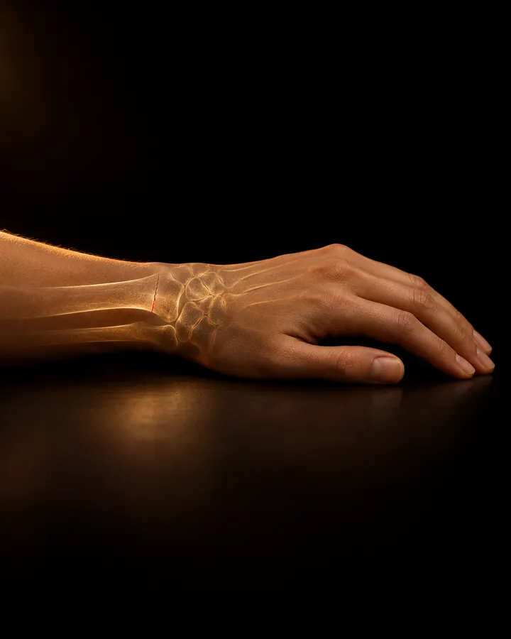
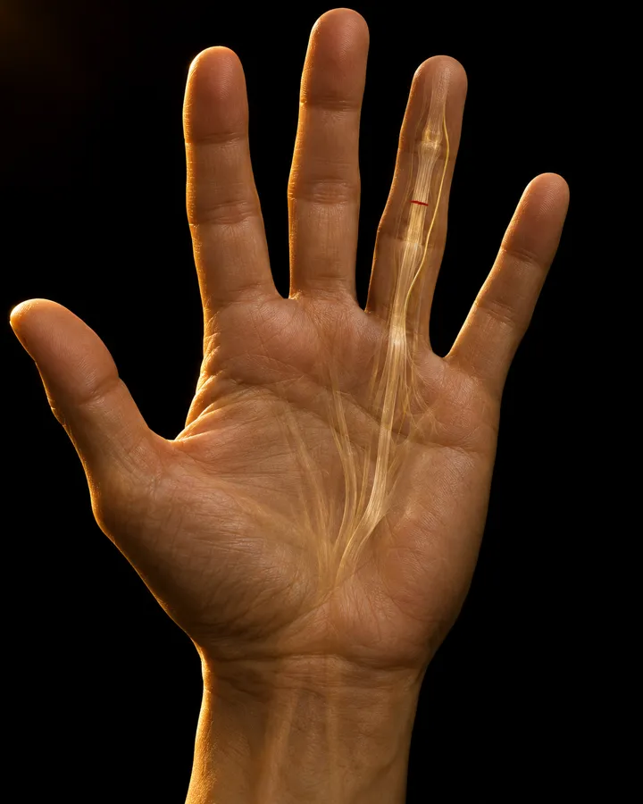

Avaliação
Conversa, exame da mão e, quando preciso, exames de imagem ou do nervo.
Você sai sabendo o que foi encontrado e quais são os próximos passos.
Cirurgião da mão e do punho em Alphaville e Osasco, para pacientes de Barueri e região.
Dr. Pedro Sarzi · Médico · CRM-SP 183.332 · RQE 110447
Toque no que você sente para ver o que pode estar por trás.
Imagens conceituais ilustrativas. Conteúdo educativo; a avaliação considera o seu caso.
Na lateral do punho ou na base do polegar
Dor
O que observar
Piora ao torcer o punho, fazer pinça ou pegar peso.
Pode estar ligado a
Do polegar à metade do anelar
Formigamento
O que observar
Costuma piorar à noite ou ao segurar o celular e o volante.
Pode estar ligado a
A mão adormece
Dormência
O que observar
Você sacode a mão para voltar ao normal. Depois de um corte, um dedo pode ficar dormente.
Pode estar ligado a
Objetos escapam da mão
Perda de força
O que observar
Abrir potes, girar a chave ou segurar a xícara fica difícil.
Pode estar ligado a
O dedo trava dobrado
Travamento
O que observar
O dedo pode travar dobrado e precisar da outra mão para esticar; às vezes, estala ao soltar.
Pode estar ligado a
Um clique ao mexer o dedo
Estalo
O que observar
O clique pode vir com travamento e dor na base do dedo, às vezes mais forte ao acordar.
Pode estar ligado a
No punho ou na palma
Caroço
O que observar
Um caroço macio no punho ou um nódulo firme na palma da mão.
Pode estar ligado a
Dor, inchaço ou dedo que não dobra
Depois de queda ou corte
O que observar
Um dedo torto, uma dor que não passa ou um dedo que perdeu o movimento.
Corte com dedo que não dobra ou dormente: procure atendimento no mesmo dia.
Pode estar ligado a
Escolha uma condição para ver o que é, os sinais e os caminhos de tratamento.







O nervo mediano, que dá sensibilidade a parte dos dedos, fica apertado num canal estreito do punho.
Conforme a avaliação.
O tendão que dobra o dedo engrossa e passa com dificuldade pela polia, um anel que o mantém junto ao osso.
Conforme a avaliação.
Inflamação de dois tendões do polegar, na lateral do punho. Comum depois do parto e em movimentos repetidos de pinça.
Conforme a avaliação.
Desgaste da cartilagem (artrose) na articulação da base do polegar. É mais comum em mulheres depois da menopausa.
Conforme a avaliação.
Uma bolsa de líquido ligada a uma articulação ou a um tendão. É benigno e parte deles regride sozinha.
Conforme a avaliação.
Bater com um livro não é tratamento e pode causar lesão.
O tecido sob a pele da palma (fáscia) engrossa e forma nódulos e cordões que, com os anos, puxam o dedo para dentro.
Conforme a avaliação.
Quebra de um osso dos dedos, da mão ou do punho, em geral depois de queda ou pancada. A do escafoide, no punho, pode não aparecer no primeiro raio-X.
Conforme a avaliação.
Os tendões ligam os músculos aos ossos e movem os dedos. Um corte, mesmo pequeno, ou uma pancada na ponta do dedo pode rompê-los.
Conforme a avaliação.
Depois de um corte, se o dedo não dobra ou ficou dormente, procure atendimento no mesmo dia.
Nenhuma destas condições está entre os usos do PRP autorizados pelo CFM. O que o CFM autoriza no PRP
Cinco perguntas para organizar o que você sente. É uma orientação educativa e não substitui a consulta.
Pergunta 1 de 5
Cirurgia da mão, com especialização pela UNESP e formação em ortopedia e traumatologia.
Há 10 anos na medicina. Em cada consulta, explica o que encontrou e os caminhos possíveis, para decidir junto com você.
Nem todo caso passa por todas as etapas. A avaliação define o que faz sentido para você.
Conversa, exame da mão e, quando preciso, exames de imagem ou do nervo.
Você sai sabendo o que foi encontrado e quais são os próximos passos.
Órtese (tala feita para a sua mão), fisioterapia, ajuste das atividades e medicação.
Em muitos casos, o tratamento começa por aqui.
Aplicação de medicação no ponto da inflamação, às vezes guiada por ultrassom.
Para liberar um nervo, reparar um tendão ou fixar uma fratura. A microcirurgia usa lentes de aumento em nervos e vasos.
Só quando indicada, com a recuperação explicada antes.
Exercícios e acompanhamento para recuperar movimento e força.
O tempo varia conforme cada caso.
Do primeiro contato ao plano de cuidado, em quatro passos.
Ele atende em três locais, em Alphaville e em Osasco. Os dias e horários de cada um estão em Onde atende.
Se tiver, leve exames, laudos e a lista de medicamentos. Sem exames, tudo bem: a avaliação começa pela conversa.
Uma dica: anote quando o sintoma aparece e o que costuma piorá-lo.
O Dr. Pedro escuta o que mudou na sua rotina, examina a mão e o punho e explica o que encontrou.
Você entende as opções para o seu caso, o que cada uma envolve e como seguir.
Em três locais, em Alphaville e em Osasco. Veja em que dia ele está em cada um.
Os sábados de atendimento são dois por mês.
Alphaville
Segunda, das 17h às 19h
Rua Antônio Agú, 630, Centro, Osasco
Segunda, quarta, quinta, sexta e dois sábados por mês
Osasco
Quinta, das 17h às 20h
Toque no nome de um local para ver só os dias dele na agenda.

Veja o local no mapa sem sair da página.
O mapa é carregado do Google quando você toca no botão.